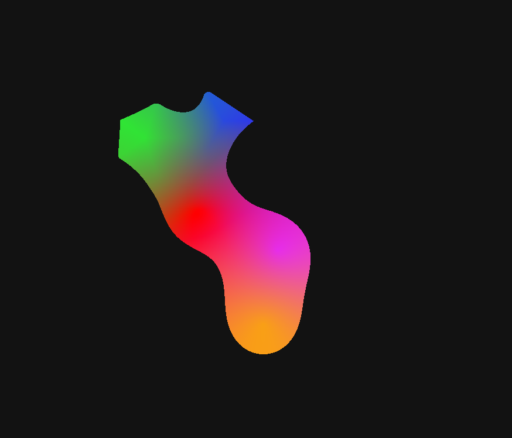

Discord bot for searching asl or bsl signs for words. Written in C#, it uses DSharp+ to interact with discord, scrappysharp to scrap the elements from signingsavvy.com
and external api for Vrchat signs (generally very similar to irl ones but nice to have).
The code is up in my github
, feel free to use it at will.
Discord sign language bot
Mandelbrot set renderer (and other fractals)

Simple C# app to calculate and display the mandelbrot set and Burning ship fractals.
Counts with options for color, number of maximum iterations calculated, zoom and offset.
By clicking "Draw" button it will show the set,
clicking "ship" it will show the Burning ship, after clicking either of those click anywhere in the form to get the respective julia set
from that point, of the last set (either mandelbrot or burning ship). Uses multithreading on the cpu for faster load.
You can check the code here,
or try an online version on your internet explorer. This one will use the GPU, running on Webgl and is incredibly faster than the CPU version.
Bézier curve procedural animator

Pure Javascript page to show how a Bézier curve is formed. On startup it shows a default 3 point curve.
Hold ctrl key and click to add a new control point, hold left shift to delete a control point. You can click and hold, drag,
to make a square for selecting multiple points at the same time, just as you would in windows. Once you have selected the points you can move them by dragging
the square around.
On the top left corner there is a preview to see what the curve looks like. Right next to it there is a control to enable or disable the animation of t.
T is a value that is used to create the curve. It goes from 0 to 1 and once it's reached 1 the curve is completed. By enabling the animation of t it will automatically
slowly increase and restart once it's reached 1. If you disable it, a slider will appear on it's side for manually controlling the value of t.
Raymarching based shape blend

With a technique based on raymarching (and i say based because there's no actual marching being done as it's not necessary), this little project displays different
shapes on the screen.
Use the inspector at the right to add shapes with different colors and values, rename them on the objects list by double clicking, or change their values
by selecting them and using the inspector at the right.
Click to drag the objects on the screen or, by double clicking, select them.
Change how much the objects blend with each other and enable or disable the drawing of the borders of the shapes in the settings tab.
The visual representation runs on on gpu thanks to GPU.js!